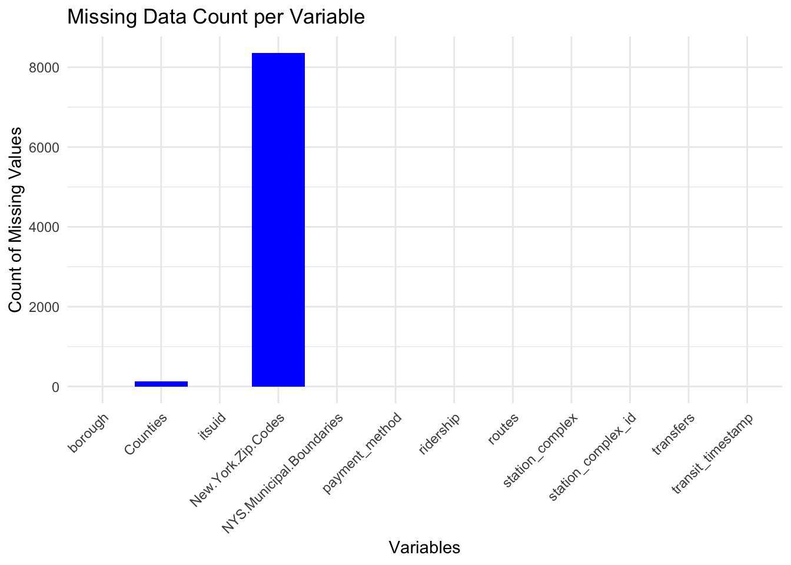

The dataset in question is collected and maintained by the Metropolitan Transportation Authority (MTA) of New York. It comprises hourly records of ridership data from various turnstiles throughout the subway system, providing an intricate picture of subway usage patterns over time. The data is structured in a tabular format, with updates made available to the public on a weekly basis. The dimensions of the dataset include timestamps, station information, types of payment methods used, and ridership counts, among others.
The data is collected through electronic turnstiles that register each entry and exit, timestamped to the nearest hour. The MTA uses this information for operational purposes and releases it for public use under the state’s open data initiative.
The format of the data is suitable for analysis in R. Issues that one might encounter with this data include discrepancies due to maintenance or operational shutdowns, which could lead to unrecorded entries or exits. There may also be anomalies during holiday periods or special events, which could affect regular traffic patterns.
The specific dataset can be accessed through the provided link: MTA Subway Hourly Ridership Data (https://data.ny.gov/Transportation/MTA-Subway-Hourly-Ridership-Beginning-February-202/wujg-7c2s).
The applied filters serve to narrow down the dataset to a manageable and relevant subset for analysis.
Time Filter: We filtered the data to include only the entries between July 1, 2022, and December 31, 2022. This time range focuses the analysis on the second half of the year, which may help in observing trends related to seasonal ridership changes or responses to specific events within that timeframe.
Transfer Filter: We include any records where the number of transfers is zero. We are focusing on entries where riders did not switch from one subway line to another during their trip. This is useful for analyzing direct trips and could indicate stations with a high number of origin or destination traffic without intermediate transfers.
Ridership Filter: We have included only those records where the ridership is greater than 20. This filter serves to remove outliers where stations have extremely low traffic, which might not be significant for broad pattern analysis. It ensures that the data reflects stations and times with a minimal level of activity, thereby focusing on periods and places of substantive use.
Column Removal: We have opted to exclude the ‘latitude’, ‘longitude’, and ‘Georeference’ columns from the original dataset. The ‘station_complex_id’ serves as a unique identifier for each station, rendering the specific geographic coordinates unnecessary for the scope of our analysis. This decision simplifies our dataset and aligns with our focus on station-based trends without the need for precise geospatial mapping.
2.1 Description
2.1.1 Research Plan
1. Data Import and Cleaning: - We will import the MTA Turnstile dataset into R utilizing the readr package for seamless data reading. - We will carry out preliminary cleaning to maintain data quality. This includes addressing missing values, verifying and correcting data types, and resolving any anomalies resulting from maintenance or special events. - We will also validate the integrity of the pre-applied filters to ensure the dataset’s relevance to our analysis.
2. Exploratory Data Analysis (EDA): - Utilizing dplyr for data wrangling and ggplot2 for visualization, we will conduct an initial exploration to grasp the dataset’s structure and content. - We will generate summary statistics that will aid in understanding the distribution of ridership and spotlighting any immediate patterns or outliers within the data.
3. Traffic Analysis by Stations and Boroughs: - Data will be summarized by stations using R’s aggregation functions to pinpoint those with the most significant foot traffic. - A borough-level analysis will be performed to identify which parts of the city show higher activity levels. - Findings will be visualized using bar charts and maps to provide clear and engaging representations of our data.
4. Time Series Analysis: - We will create time series plots, enabling us to examine the variations in subway traffic patterns across different days and times.
5. Peak Period Identification: - By aggregating ridership data, we aim to identify peak travel times accurately. - Clustering techniques, such as k-means clustering, will be employed to categorize time periods into high, medium, and low ridership clusters.
6. Statistical Testing: - We will apply chi-squared tests and other relevant statistical tests to investigate the relationships between categorical variables such as payment method and ridership, allowing us to draw meaningful inferences from the data.
7. Interpreting Results: - The results will be interpreted in light of the original research questions posed. - A detailed discussion of our findings will be provided, considering the implications for urban planning and policy-making. - Our conclusion will summarize the study’s outcomes and propose recommendations for further research or potential applications of our findings in real-world scenarios.
2.2 Missing value analysis
In our examination of the MTA dataset, a focused analysis on the presence of missing values has been conducted. Our findings are encapsulated in two key visualizations: a bar chart and a proportional representation of missing data by borough.
The bar chart delineates a significant prevalence of missing entries predominantly in the New.York.Zip.Codes variable, towering over the Counties variable, which exhibits a relatively minor quantity of missing data. This pattern indicates that while most data points are complete for the majority of the variables, the collection or recording of zip codes has been inconsistent.
Upon further investigation, portrayed in the proportional missing data by borough graph, it is evident that the missingness in New.York.Zip.Codes does not discriminate by borough, suggesting that the lack of zip code data is a systemic issue rather than a localized anomaly. The Counties variable, although also affected by missingness, shows a much lesser degree of absence across the boroughs.
Considering our project’s goals to study subway usage trends, the importance of stations, and busy travel times, the detailed location information from zip codes and counties isn’t really necessary. We’ve decided that the broader location data from the ‘borough’ variable is enough for our geographical analysis. So, we’re going to take out the ‘New.York.Zip.Codes’ and ‘Counties’ variables to keep our analysis clear.
Code
mtadata <-read.csv("mtadata.csv", header =TRUE, stringsAsFactors =FALSE)missing_values_count <-colSums(is.na(mtadata))missing_values_df <-data.frame(variable =names(missing_values_count), missing_count = missing_values_count)ggplot(missing_values_df, aes(x = variable, y = missing_count)) +geom_bar(stat ="identity", fill ='blue') +theme_minimal() +theme(axis.text.x =element_text(angle =45, hjust =1)) +labs(x ="Variables", y ="Count of Missing Values") +ggtitle("Missing Data Count per Variable")

Code
mtadata$Missing_Zip_Code <-is.na(mtadata$New.York.Zip.Codes)mtadata$Missing_Zip_Code <-NULLmtadata$timestamp <-NULLmissing_by_borough <- mtadata %>%group_by(borough) %>%summarise(Proportion_Missing_Zip =mean(is.na(New.York.Zip.Codes)),Proportion_Missing_County =mean(is.na(Counties)) ) %>%pivot_longer(cols =starts_with("Proportion_Missing"),names_to ="Variable",values_to ="Proportion_Missing" )ggplot(missing_by_borough, aes(x = borough, y = Proportion_Missing, fill = Variable)) +geom_bar(stat ="identity", position =position_dodge()) +theme_minimal() +labs(x ="Borough", y ="Proportion Missing", title ="Proportion of Missing Data by Borough") +scale_fill_brewer(palette ="Set1") +theme(axis.text.x =element_text(angle =45, hjust =1))